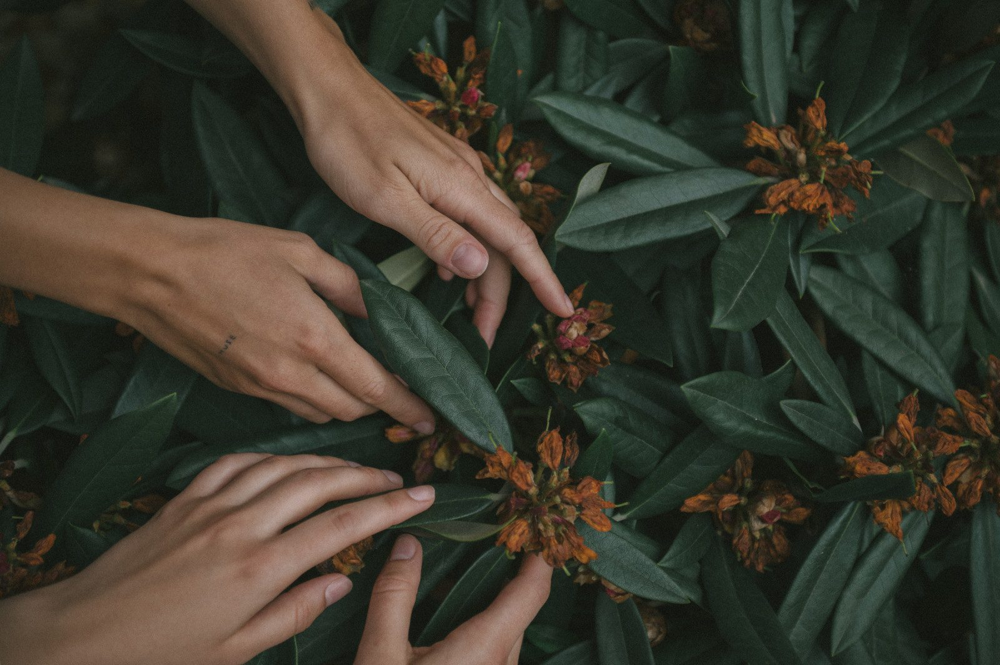
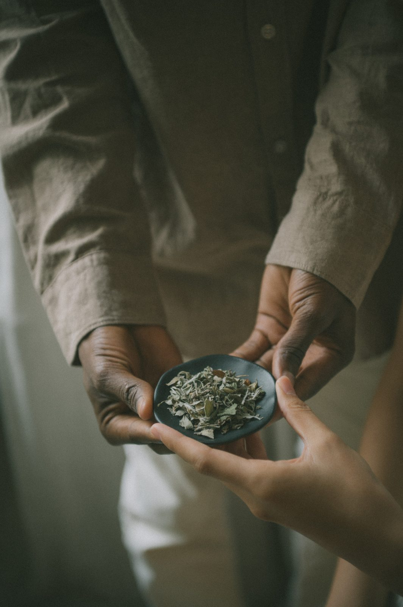
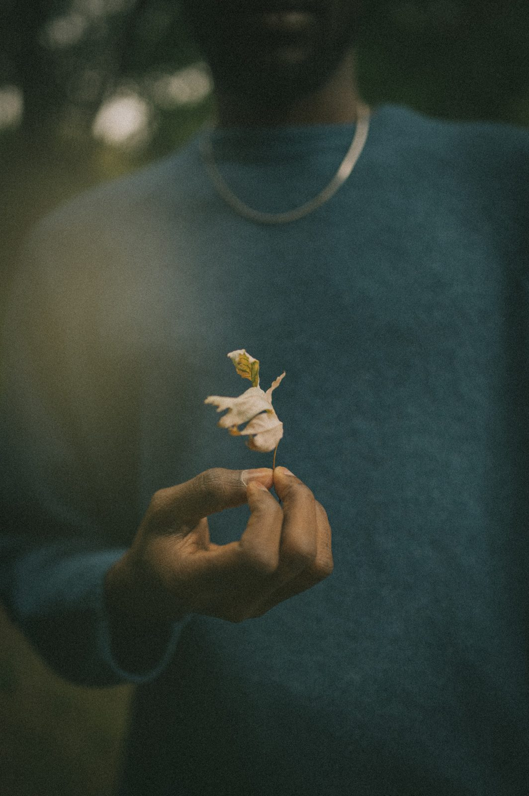
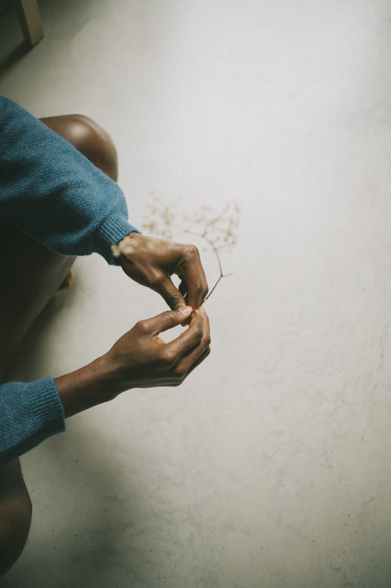
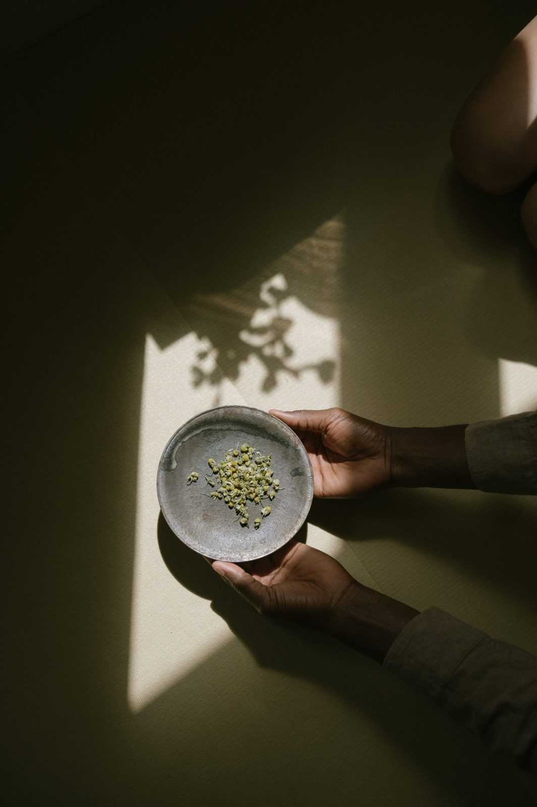
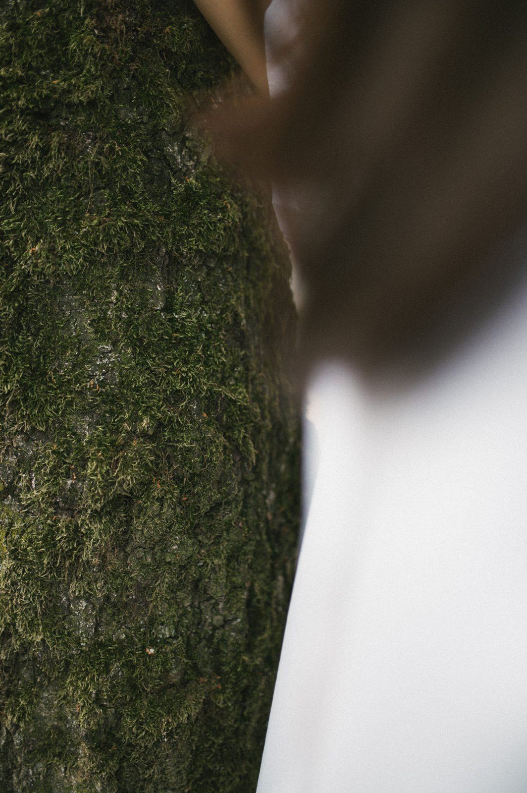
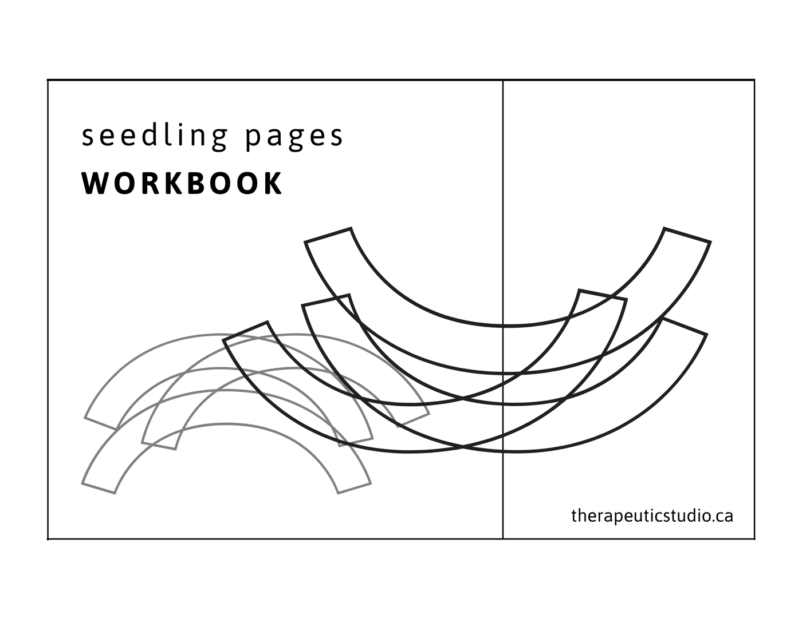

Therapeutic StudioA paper practice
Nine pages to attend to, fold, and give back to the ground. Therapeutic Studio works with the natural world as company for what we feel — not as a symbol for it, but as a body that has been through something like it, for far longer than we have. A seed has been through a great deal of waiting. It knows something about holding a whole life closed and still until the time is right. Here, we make something beside it, and then let the making go where the seed goes.

Other bodies of the natural world are not metaphors for what we feel. They are sites of wisdom. Each has been doing something structurally like a human emotion for far longer than there have been humans to feel it — and sitting with what it actually does can make your own version of that emotion easier to be with. Not easier to solve. Easier to keep company with.
The seed belongs in that company. It is a whole plant, very small, packed beside the food it will need and closed inside a coat. The coat keeps water out, and so the seed waits — not because nothing is alive in it, but because the time is not yet right. When water does come in, what was paused begins to work again, and the first thing to leave the seed is not a leaf. It is the root. Before anything shows above the soil, the seed has already gone down into the dark and taken hold there. Where this comes from.
So a sitting with these pages becomes a place to let something wait without calling it stuck. You attend to a page, and then you fold it, fill it, and sow it. Nothing is kept whole, judged, or performed. The page goes into the ground — and whatever came up in you while you made it is allowed to go on changing, out of sight, before there is anything to show for it.
This is an invitation, peer to peer. I am learning as I go, a student among older practices — a paper box that people in Japan and in Europe have folded for generations, and ways of making with care and then giving back that others have kept far longer than I have known of them — naming where they come from and staying a learner rather than claiming mastery. You don't need to know how to draw. You need a page, a little soil, a seed that belongs where you live, and a willingness to notice what arrives.

The making here is done on ordinary paper — the kind that comes out of a home printer, nothing more. Not because it is cheap, but because of what paper is. It was a plant once. It takes a mark, holds a crease, tears along a wet line, and softens when it is damp. It can be finished and still be given away. That last part is the point.
Each page began as a photograph of a plant I have lived beside. I drew each one, and then drew the drawing, moving closer each time, until what was left was a small part of a body seen from very near. They have no names here. We are too close to them for names. So this isn't colouring in. There is no picture to complete, and nothing to get right. Attend to a page with whatever you have — pencil, watercolour, ink, nothing but your eyes — in whatever way this moment needs.
And then most of it goes back. The page folds into a small pot, and the pot goes into the soil with a seed in it. One strip of each page stays with you. When you have a few, you weave them. That is the whole of what you keep: not the picture, but a trace that you were there.
Four ways in

Nine companions, drawn very close. Print one at a time, attend to it however this moment needs, and let it go.
See more
How to fold it, slowly. Nine pictures: tear the strip, fold the box, sow the seed, and weave what stays.
See more
What does a seed do while it waits? Notes on seed, paper, the fold and the research — each with its sources, and its limits.
See more
When to sow, and where to find seed that belongs. A map of regions, each with its own season and its own keepers.
See more
A printable workbook — the opening pages, the practice in nine pictures, and a blank page marked with fold lines, so you can try the box before you fold a page you have attended to. The nine drawings are being made now and will be added as they are finished. Nothing to complete. Print the page you need, and begin.
Seedling Pages is not a diagnostic tool, a therapeutic assessment, or a replacement for professional mental health support. It is a creative care practice — a way of tending to yourself through attention, making, and the quiet company of the natural world. If you are working with difficult emotions and would like more support, please reach out to a qualified therapist or counsellor.